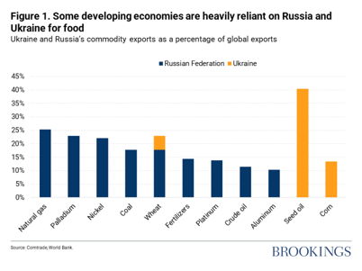
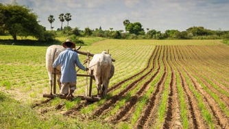
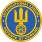

지난달 24일, 러시아가 우크라이나를 침공하였고 전쟁이 시작됐다. 현재 많은 사상자들과 난민들이 발생하고 있으며 우크라이나는 경제에서 문화 영역까지 큰 타격을 받고 있다. 러시아는 30개국의 집단 안보 체제인 NATO에 우크라이나 가입 금지를 보장받기 위한 목적 등으로 우크라이나를 침공했다. 러시아 대통령 블라디미르 푸틴은 침공 전 TV 연설에서 우크라이나를 ‘역사적 러시아의 일부’라고 표현하며 2014년 우크라이나 혁명으로 친러 성향의 우크라이나 대통령 빅토르 야누코비치가 축출된 이후 우크라이나의 부패가 심해졌다고 ‘우크라이나의 비무장화’가 필요함을 주장하였다. 푸틴의 연설에서 두 국가 간의 문제는 단순히 현대의 이해관계의 문제만으로 발생된 것이 아님을 알 수 있다. 역사적으로 우크라이나와 러시아는 끈질기게 싸워왔다.
두 국가간 갈등의 뿌리는 국가의 기원으로부터 시작된다. 9세기에 건국된 키예프 루스는 오늘날 동유럽 지역의 키예프를 중심으로 우크라이나, 러시아, 벨라루스 일대에 존재했던 루스인들의 국가였다. 두 국가는 각자가 동슬라브족의 최초국가인 키예프 루스 공국의 정통후계자라고 주장하며 국가의 기원에 대한 논쟁을 벌여왔다. 러시아는 자신들이 정통성을 받은 유일한 국가라고 주장하는 한편 현재 수도가 키예프인 우크라이나는 키예프를 수도로 했던 루스국의 전통성은 자국이 받아았다며 갈등하였다.
13세기 키예프 루스국의 멸망 후 카자크국과 모스크바가 맺은 페레야슬라프 조약을 바라보는 관점에서도 갈등이 있었다. 키예프 루스국이 13세기 몽골에 의해 멸망한 후, 현 우크라이나 지역을 처음에는 리투아니아가, 그에 이어 폴란드-리투아니아 연방이 차지한다. 당시 폴란드의 농노제가 확립되는 과정 속에서 우크라이나 남쪽 변방에 농사를 짓는 사람들인 카자크족이 등장하게 되고 이가 발달하여 카자크국이 등장한다. 카자크는 크림반도에 살던 튀르크계 민족 크림 타타르와 폴란드에게 압박을 받자 현재의 모스크바와 페레야슬라프조약을 맺는다. 카자크국이 모스크바에 의탁하는 조건의 페레야슬라프 조약에 대해 모스크바공국은 멸망한 키예프 루스국이 모스크바 공국과 재통일한 것이라 본 반면, 카자크는 모스크바와 잠시 군사동맹을 맺었을 뿐이라고 주장하며 갈등하였다.
페레야슬라프조약 이후 폴란드-모스크바 전쟁이 일어나고 협약을 통해 우크라이나를 나누어 갖는다. 18세기 말 폴란드가 주변 강대국에 의해 없어지고 우크라이나는 오스트리아와 러시아가 나누어 가지게 된다. 이때 오스트리아가 지배했던 서우크라이나에서는 민족주의가 성장했고, 러시아가 통치했던 동러시아는 친러시아 성향을 띠게 되었다. 이는 오늘날까지 영향을 미쳐 현재 친서방 성향의 중부와 서부, 친러시아 성향의 남부와 동부로 우크라이나가 양분화되는 뿌리가 된다.
1920년대 소련이 탄생하며 우크라이나는 소련의 공화국 중 하나로 병합된다. 소련의 소수민족 국가 정체성 존중을 위한 정책으로 우크라이나는 소련의 지배 속에서도 독자적인 언어와 문화를 발전시킬 수 있었다. 하지만 1930년대, 스탈린의 독재 정치하에 곡식을 수탈당했고 ‘유럽의 빵 바구니’ 라고 말할 정도로 드넓은 곡창지대였던 우크라이나에서 수백만명이 아사하는 비극적인 일이 생긴다.
1950년대 스탈린이 죽고 최고의 공산당 서기장이 된 우크라이나 출신 니키타 흐루쇼프는 행정 재정비를 위해 소련의 크림반도를 우크라이나에 넘겨주었다. 1991년, 소련 해체 이후 우크라이나는 독립된 국가의 형태로 급속한 경제성장과 발전을 이루었다. 2013년, 우크라이나의 친러성향 대통령 빅토르 야누코비치가 EU와 통합을 무기한으로 연기하고 러시아와 경제적인 관계를 맺으려고 하자 야누코비치를 축출하기 위해 우크라이나에서 유로마이단의 시위가 발생되었다.. 이에 러시아는 2014년 크림반도를 독립시키고 합병조약을 체결한다. 크림반도는 흐루쇼프가 우크라이나에 넘길 당시에도 거주자의 70%을 러시아인이 차지하며 친러성향을 띠었다. 유로마이단 시위로 형성된 우크라이나 중심 세력에 반감을 갖고 있던 크림반도의 사람들은 러시아가 합병을 제안하자 95%의 찬성률로 러시아에 귀속하게 된다. 이 사건은 곧 우크라이나 내의 친러시아 사람들이 우크라이나 중앙 정부에 대항한 돈바스 내전으로 이어지게 된다. 돈바스 내전 이후 러시아와 우크라이나는 본격적으로 전쟁적 양상을 띠게 되었다. 이것이 오늘날까지 이어져 우크라이나를 폐허로 만들고, 주변국과 국제사회에 위협을 가하는 러시아 우크라이나 전쟁이 발발하게 된것이다.
[작성자: 국제팀 윤신희]
Effects of the Ukraine crisis on developing countries
The devastating news of the Ukraine crisis has induced panic globally. Millions of Ukranians have left their beloved homes and thousands of people have been killed. However, it is not just Ukraine and Russia that are facing life-threatening hardships. Developing countries worldwide are already, or are expected to experience immense regression in their development.

According to the International Monetary Fund(IMF), the prices of energy and commodities, especially grains, have increased rapidly worldwide. This worsened the inflationary pressures that were already heightened by the Covid-19 pandemic. IMF also projects that these price shocks “will have an impact worldwide, especially on poor households for whom food and fuel are a higher proportion of expenses”(Georgieva 3).
Moreover, Ukraine and Russia produce a sufficient portion of worldwide supplies of metals, grains, oil and other commodities. The graph above indicates that the war between the two countries will undoubtedly have a substantial negative influence on world markets. This influence implies that developing countries, which are extremely vulnerable to the price fluctuation in world markets, will suffer from increased poverty and food insecurity.

Meanwhile, financial turbulence, decreasing remittances, and increasing refugee populations are also hindering the development of low income countries. Tremors caused by the war could provoke a sell-off in stocks and capital outflows from developing economies, triggering “currency depreciations, falls in stock prices, and higher risk premiums in bond markets”(Gill 4). Experts express concern that this economic situation could create acute stress for developing economies with high debt levels.
It is heartbreaking to hear the news of Ukrainian people suffering from the war. It is even more tragic that the underprivileged in the global society are again having damage due to the fights between powerful nations. Now, it is the time for the international society to also pay attention to the spillovers of the war to lower-income countries on the globe.
[작성자: 국제팀 한혜민]
러시아-우크라이나 전쟁 속 국제 의용군의 위치
2014년 러시아의 크림 반도 합병은 우크라이나 정부군과 돈바스 반정부군 간의 교전에 시발점을 쏘아 올렸고, 우크라이나 정부의 나토 가입이 가시권에 들어오자 러시아는 우크라이나 침공을 본격화하였다. 러시아 예비군을 포함한 정규군과 루카셴코 정부가 통솔하는 벨라루스군 등 친러시아 세력 또한 교전에 참가하였다. 반대로 군사적 지원으로서 전술교관과 군수물자를 제공하는 미국, 영국 등의 나라들이 우크라이나 군사 보강을 돕고 있다. 더 나아가 러시아로부터의 사이버 공격으로 우크라이나 인터넷이 마비되자 스타링크를 우크라이나 지역에 활성화 하는 등 범국가적 지원을 초월한 지원이 우크라이나에 행해지고 있다.
러시아 정부의 침공에 반대하고 우크라이나 주권의 수호를 명목화한 직접적 군사 지원 또한 이뤄지고 있다. 국제 의용군의 형태로서 조직된 이 군사 지원은 '우크라이나 국제 국토방위군단(Інтернаціональний легіон територіальної оборони України)'으로서 행해진다. 의용군들의 출신국은 대한민국을 포함한 여러 나라로 집계되었지만, 아이러니하게도 이타를 목적으로 한 이 군사 행위에 여러 정부가 권고의 입장을 취하지 않는다. 대한민국의 경우 해군 특수전전단(UDT/SEAL) 대위로 전역한 유튜버 '이근'을 필두로 한 관계자들이 정부의 만류에도 여권법을 위반하며 여행금지구역인 우크라이나에 입국했고, 대한민국 정부에 군수물자 지원을 요청하는 글을 SNS에 게시했다. 많은 특수전 경험을 토대로 우크라이나에 인도적 목적으로 참전하겠다는 이들에 대한 비판 여론도 끊이지 않고 있다. 여권법 위반은 물론 개인이 자의적으로 외국에 대한 전투행위를 했을 때 성립되는 사전죄(私戰罪)의 여지가 있으며, 이들은 국제법 상으로도 전투행위를 정당화 할 수 있는 신분이 아니기 때문에 경우에
따라 살인죄로 처벌받을 수 있다는 의견이다. 또한 국내외적으로도 대한민국 정부의 입장과 무관하게 독단적으로 참전한 그들에게 과연 정부가 재외국민 보호를 제외한 어떠한 조치를 취할 수 있을지도 불투명한 실정이다.
이들이 저지른 위법행위가 국가 안전에 타격을 줄 수 있다는 내용의 처벌론이 우세한 상황이지만, 그것과 별개로 그들의 참전 목적이 알려진 바와 같다면 그 목적 조차 비난받아서는 안된다. 우크라이나 국내의 평화와 대한민국 국민의 안전한 귀국을 기원한다.
